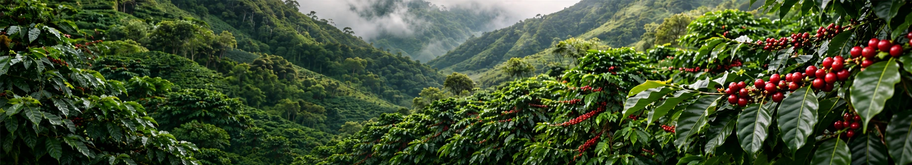

Indonesian Robusta Coffee — Grade 1
Premium Indonesian Robusta · Sumatra, Java, Flores & Lampung · Full-Bodied Flavor
Overview Robusta coffee is offered for buyers seeking a strong, full-bodied profile for blends and industrial coffee processing. The company profile lists origins including Sumatra, Java, Flores, and Lampung, with washed, natural, and honey processing options to discuss.
Benefits Full-bodied character A bold profile for espresso and other coffee blends.
Screen size selection Size 16–18 is listed in the company profile.
Choice of processing Discuss washed, natural or honey processing when ordering.
Specifications
Parameter Specification Grade Grade 1 Bean size 16–18 Moisture Less than 12.5% Processing Washed, Natural, Honey Packaging 60 kg jute bag with PE liner Applications Espresso blends / instant coffee
Confirm the current product and order specifications with our team.
Applications Roasting Used in espresso blends and traditional coffee. Instant Coffee For industrial instant coffee processing.
Packaging & Buyer Checklist The profile lists 60 kg jute bags with a PE liner. Confirm lining, labeling, and loading requirements for the specific order.
The attached footage gives a closer look at green beans and their handling. It does not establish the grade of a future shipment. For a practical sourcing discussion, specify origin preference, processing method, bean size, moisture, defect acceptance criteria, and packaging.
Profile specifications require batch confirmation. A definitive bean-defect limit is not shown because the profile contains inconsistent figures; confirm the correct limit with the company before ordering.
What to Include in Your Inquiry Which origin and processing method? Which screen size and defect criteria? Sample or cupping evaluation required? Quantity, bag configuration, and destination? From Requirements to Selection Specify the origin and processing preference. Agree bean size, moisture, and defect acceptance criteria. Review a sample and the relevant batch information. Confirm bag lining, quantity, shipping terms, and destination.
More Photos
Product Gallery Previous Next